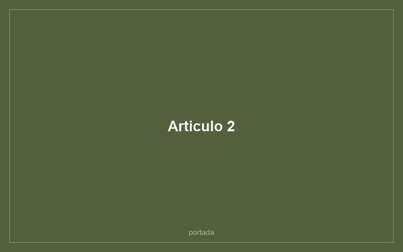

Tecnica · 6 min de lectura
Riego por inmersion: por que la planta bebe mejor desde abajo
Un balde, quince minutos y se acaban tres problemas a la vez: el sustrato apelmazado, los mosquitos y las hojas manchadas.

Que problema resuelve
Cuando un sustrato lleva mucho tiempo en la misma maceta se compacta, y la turba seca se vuelve hidrofoba: repele el agua en vez de absorberla. Si riegas desde arriba, el agua encuentra el camino mas rapido por los costados de la maceta, sale por el orificio, y te deja la sensacion de haber regado. La tierra del centro sigue seca.
La inmersion invierte el recorrido. El agua sube por capilaridad desde abajo y moja el sustrato de manera pareja, incluido el nucleo que el riego superficial no alcanza.
Como se hace
- Llena un recipiente con agua a temperatura ambiente hasta unos diez centimetros. Un balde, una fuente o el lavaplatos sirven.
- Pon la maceta dentro, sin su plato. El agua debe llegar como maximo a la mitad de la altura de la maceta.
- Espera entre diez y veinte minutos. Vas a ver como la superficie del sustrato se oscurece: esa es la senal de que el agua llego arriba.
- Saca la maceta y dejala escurrir en el lavaplatos o sobre una rejilla hasta que deje de gotear.
- Recien entonces devuelvela a su plato o a su macetero decorativo.
Cuando conviene y cuando no
Funciona muy bien en plantas de hoja delicada que se manchan con el agua encima, como las calatheas, y en helechos, que agradecen un sustrato uniformemente humedo. Tambien es la mejor forma de rehidratar una planta que llevaba semanas olvidada.
No conviene en suculentas y cactus, que prefieren un riego corto y un secado rapido. Tampoco en plantas con sospecha de pudricion: ahi lo que sobra es agua, no falta.
El efecto sobre los mosquitos del sustrato
Esos mosquitos pequenos que aparecen alrededor de las macetas ponen sus huevos en los primeros centimetros de tierra humeda. Al regar desde abajo, la superficie se mantiene seca mas tiempo y el ciclo se corta sin necesidad de insecticida.
No es magia ni funciona de un dia para otro: toma dos o tres riegos. Pero es la solucion mas simple y la unica que no implica echarle quimicos a una planta que vas a tener adentro de la casa.